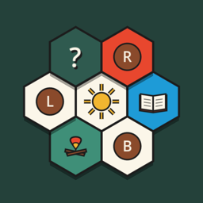

Excluir conta
No app (na hora)
Abra o Sowvation, entre em Perfil → Opções → Conta e toque em Excluir conta (é preciso confirmar). A conta e o progresso salvo na nuvem são apagados imediatamente. O progresso no seu celular continua lá, a menos que você também o apague.
Por e-mail
Se não consegue mais entrar no app, mande um e-mail para sowvation@gmail.com com o assunto "Excluir conta Sowvation", a partir do e-mail da conta. Apagamos a conta e o progresso em até 30 dias e respondemos confirmando.
O que é apagado
Seu e-mail, os dados de login e todo o progresso salvo na nuvem. Não guardamos cópia.
In the app (right away)
Open Sowvation, go to Profile → Options → Account and tap Delete account (you will be asked to confirm). The account and the cloud progress are erased immediately. The progress on your phone stays unless you erase it too.
By email
If you can no longer sign in, email sowvation@gmail.com with the subject "Delete Sowvation account", from the account's email address. We erase the account and its progress within 30 days and reply to confirm.
What is erased
Your email, sign-in data and all progress saved in the cloud. We keep no copy.